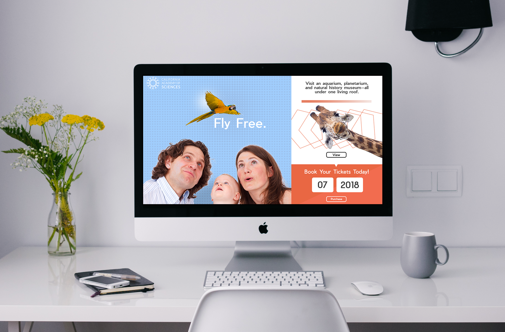
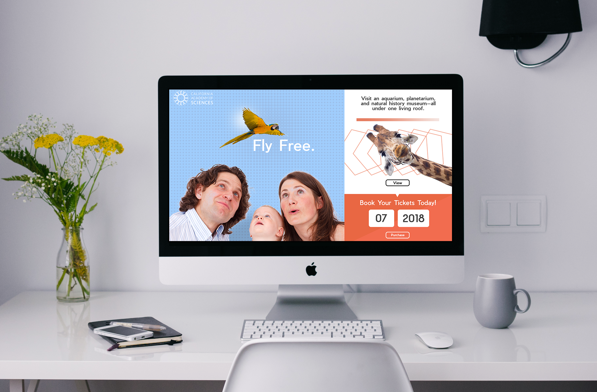

California Academy of Sciences Landing Page Redesign
Personal project. Aim to make the company's landing page easy to navigate, informative, and visually attractive. Target audience: children and families interested in purchasing tickets. Challenge to use a bright and kid-friendly color scheme. Created using Adobe Photoshop.
 
